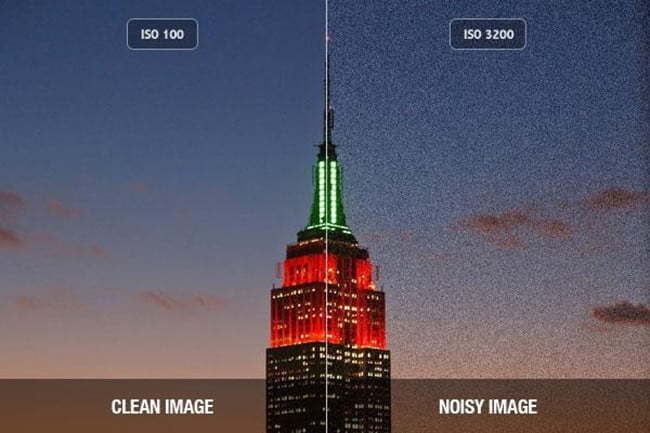
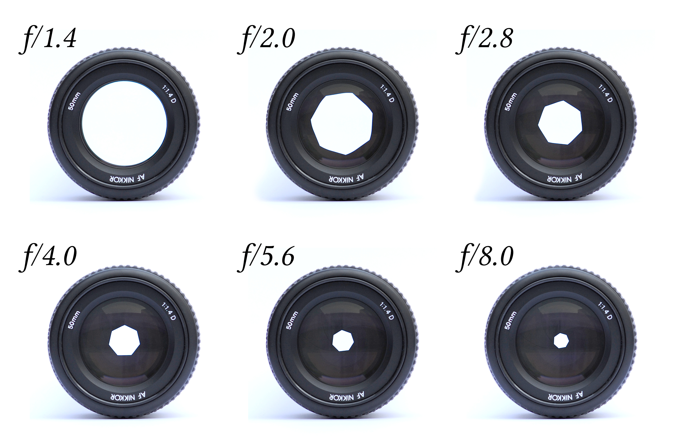

What are the 3 elements of Photography ?
So to be a professional photographer there are just 3 basic elements you should know to be one of the pros and they are:
- Shutter speed: Shutter speed is a measurement of the time the shutter is open, shown in seconds or fractions of a second: 1 s, 1/2 s, 1/4 s … 1/250 s, 1/ 500 s, etc. ... In other words, the faster the shutter speed the easier it is to photograph the subject without blur and “freeze” motion and the smaller the effects of camera shake.
- ISO: ISO is simply a camera setting that will brighten or darken a photo. As you increase your ISO number, your photos will grow progressively brighter. For that reason, ISO can help you capture images in darker environments, or be more flexible about your aperture and shutter speed settings. However, raising your ISO has consequences. A photo taken at too high of an ISO will show a lot of grain, also known as noise, and might not be usable. So, brightening a photo via ISO is always a trade-off. You should only raise your ISO when you are unable to brighten the photo via shutter speed or aperture instead (for example, if using a longer shutter speed would cause your subject to be blurry). 
- Aperture: Aperture can be defined as the opening in a lens through which light passes to enter the camera. It is an easy concept to understand if you just think about how your eyes work. As you move between bright and dark environments, the iris in your eyes either expands or shrinks, controlling the size of your pupil. In photography, the “pupil” of your lens is called aperture. You can shrink or enlarge the size of the aperture to allow more or less light to reach your camera sensor. 